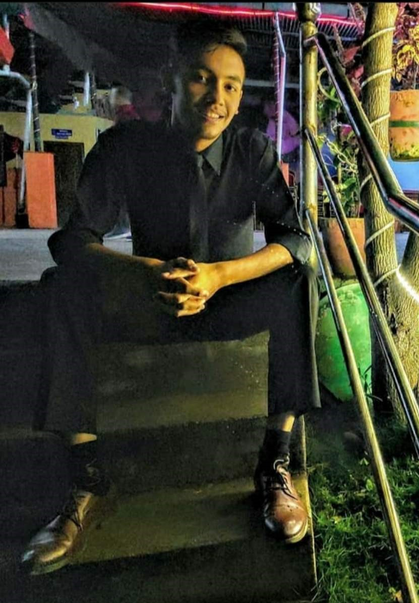

| Curriculum Vitae(C.V) |
|---|
| PERSONAL STATEMENT |
|---|
I am very hadworking and dedicated person with intermediate communication and expert management skills. I am very eager to learn new skills and gain new knowledge. I am confident that I can improve massively in any sector once I start to get hang of it and build up my confidence. |
| ACADEMIC |
|
XAVIER ACADEMY 2018-2020 Grade: +2(11-12) Examination: GPA(2.7) GRADE(B) Address: Lazimpat,Kathmandu THE CHANDBAGH SCHOOL 2012-2018 Grade: Secondary level(6-10) Examination: GPA(3.6) GRADE(A) Address: Bansbari,Kathmandu |
| EXPERIENCE |
|
SCIENCE TEACHER Mount Olympus School JAN 2021-MAR 2021 Address: Bashundhara,Kathmandu Apart from this I have volunteered in almost every school and college functions like carnivals, intra & inter college competitions, farewells and freshers. |
|  |
|---|
| PERSONAL INFORMATION |
|
NAME: Anish Dangi D.O.B: 10/03/2002 AGE: 19 years GENDER: Male ADDRESS: Dhapasi,Kathmandu NATIONALITY: Nepali EMAIL: anishdangi9@gmail.com CONTACT: +977-9823863708 |
| LANGUAGE |
|
NEPALI: Native ENGLISH: Fluent HINDI: Fluent |
| INTERESTS |
|
Christopher Nolan and Quentin Tarintion movies, Marvel Cinematic Universe, Robert Kiwosaki and Napoleon Hill books, Coding, Football, Cricket. |
I hearby assure you that the above mentioned data are true and best of my knowledge. |
|---|